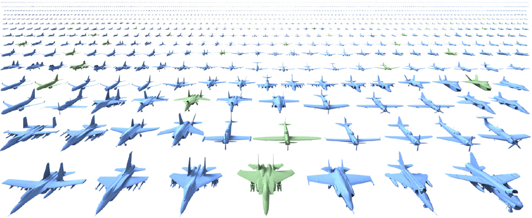
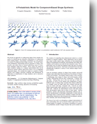

A Probabilistic Model of Component-Based Shape Synthesis
Evangelos Kalogerakis, Siddhartha Chaudhuri, Daphne Koller, Vladlen Koltun
ACM Transactions on Graphics, Vol. 31, No. 4, July 2012 (Proc. SIGGRAPH 2012)
Preprint: [PDF]
The creation of compelling three-dimensional content is a central problem in computer graphics. Many applications such as games and virtual worlds require large collections of three-dimensional shapes for populating environments, and modeling each shape individually can be tedious even with the best interactive tools. This is particularly true for small development teams that lack 3D modeling expertise and resources. Such users can benefit from tools that automatically synthesize a variety of new, distinct shapes from a given domain.
Tools for automatic synthesis of shapes from complex real-world domains must understand what characterizes the structure of shapes within such domains. Developing formal models of this structure is challenging, since shapes in many real-world domains exhibit complex relationships between their components. Consider sailing ships. Sailing ships vary in the size and type of hull, keel and masts, as well as in the number and configuration of masts. Different types of sailing ships constrain these factors differently. For example, yawls are small crafts with a shallow hull that supports two masts with large, triangular sails. Caravels are small, highly maneuverable ships carrying two or three masts with triangular sails. Galleons are multi-decked vessels with much larger hulls and primarily square sails on three or more masts. Various geometric, stylistic and functional relationships influence the selection and placement of individual components to ensure that the final shape forms a coherent whole. Similarly complex networks of relationships characterize other domains such as airplanes, automobiles, furniture, and various biological forms.
The focus of our work is on designing a compact representation of these relationships that can be learned without supervision from a limited number of examples. Our primary contribution is a generative probabilistic model of shape structure that can be trained on a set of compatibly segmented shapes from a particular domain. The model compactly represents the structural variability within the domain, without manual tuning or any additional specification of the domain. Given a trained model, plausible new shapes from the domain can be automatically synthesized by combining existing components, subject to optional high-level constraints. The key idea in the design of the model is to relate probabilistic relationships between geometric and semantic properties of shape components to learned latent causes of structural variability, both at the level of individual component categories and at the level of the complete shape.
We demonstrate two applications of the presented model. First, it can be used to amplify an existing shape database. Given a limited number of example shapes, the model can synthesize a large number of new shapes, expanding the size of the database by an order of magnitude. For example, given a hundred airplanes, the model can automatically synthesize over a thousand new airplanes, each distinct from those in the input set (Figure 1). Second, the model enables interactive shape synthesis interfaces that allow rapid creation of plausible shapes subject to high-level constraints.

Paper
ShapeSynthesis.pdf, 4MBEvangelos Kalogerakis, Siddhartha Chaudhuri, Daphne Koller, Vladlen Koltun, "A Probabilistic Model of Component-Based Shape Synthesis", ACM Transactions on Graphics, Vol. 31, No. 4, July 2012 (also presented in SIGGRAPH 2012, Los Angeles, USA) [Bibtex]
Video
Results
The following archive contains images of our training and synthesized shapes for each of our datasets. Due to license restrictions by Digimation, we cannot release the output meshes here. If you acquire the Digimimation "Modelbank" and "The Archive" and confirm with Digimation that we can share the output models with your institution, then we will send them to you.
ShapeSynthesisResults.7z, 105MB.
Code
The following archive contains the implementation of the probabilistic model.
SGML.7z, 17MB
Presentation
Here is the Siggraph 2012 presentation of the paper:
Microsoft Powerpoint version of presentation, 10.9MB
Adobe PDF version of presentation, 3.4MB